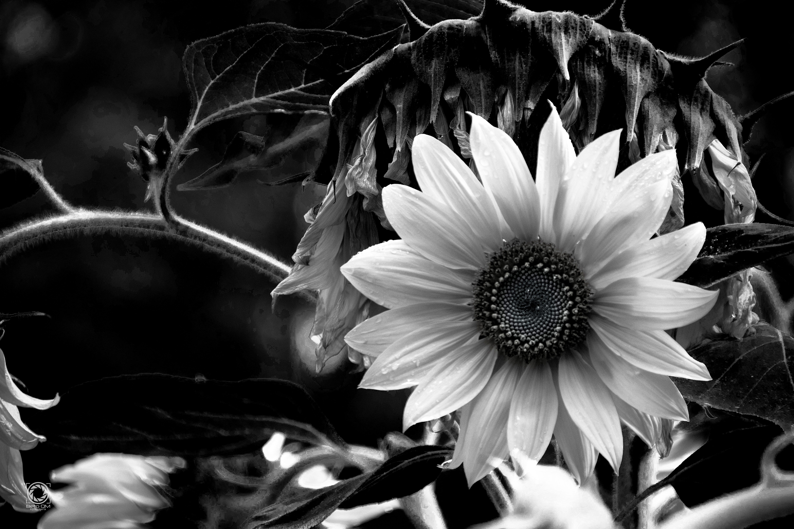
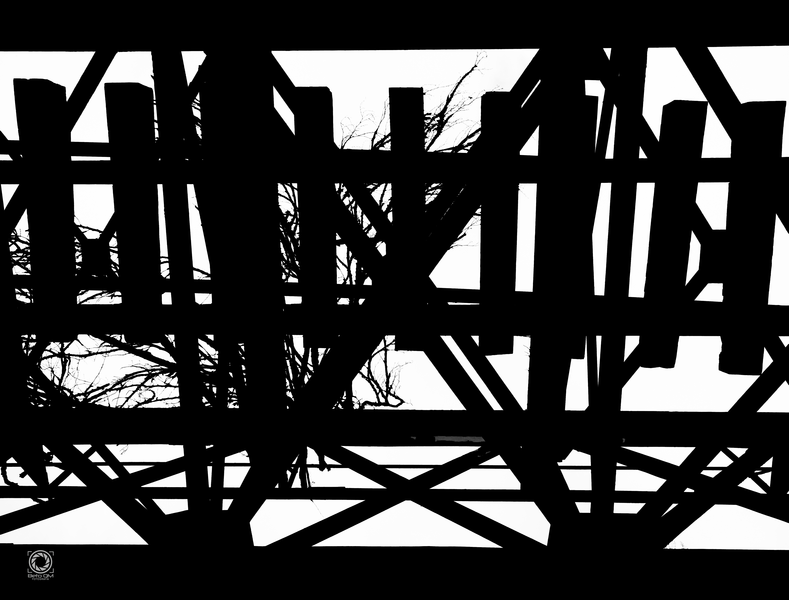
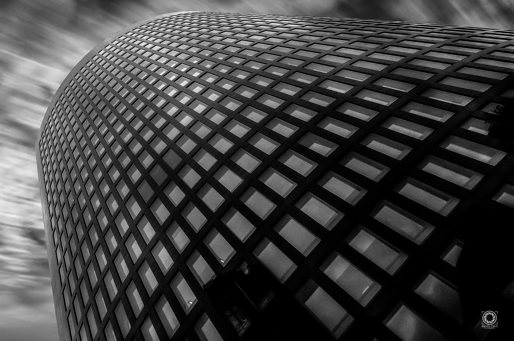
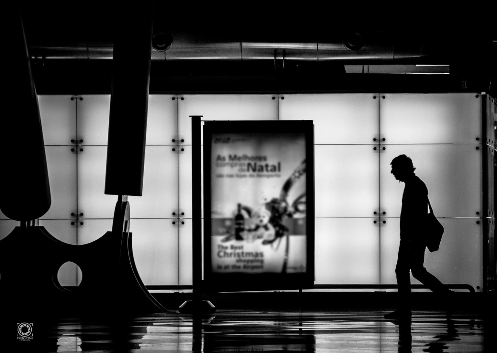
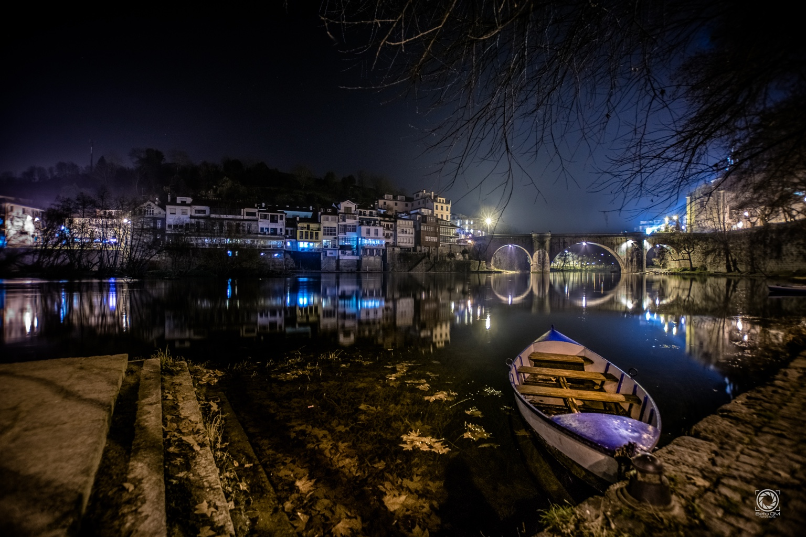
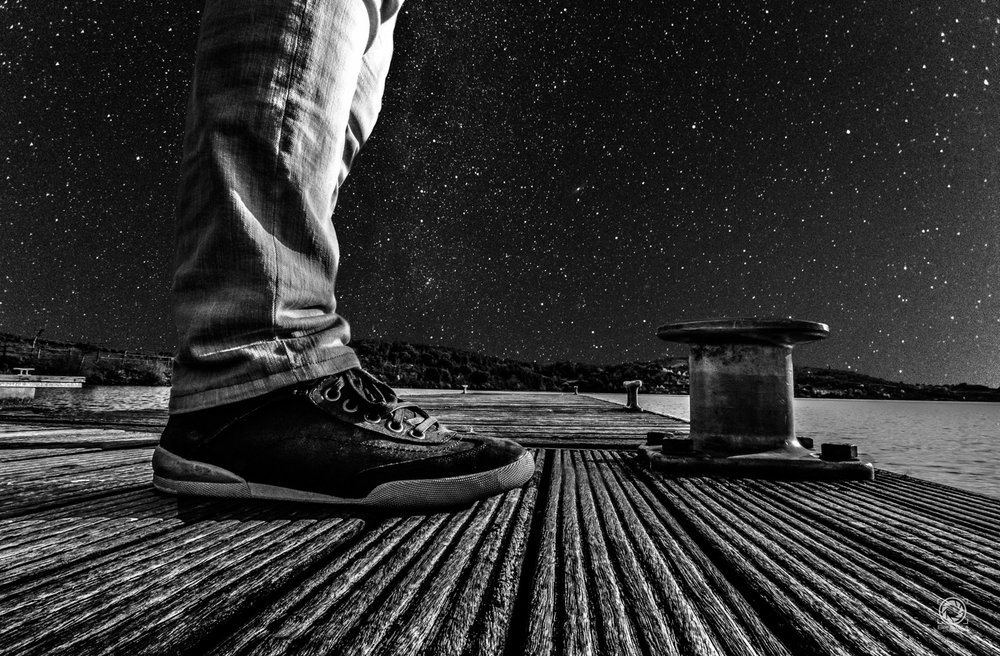
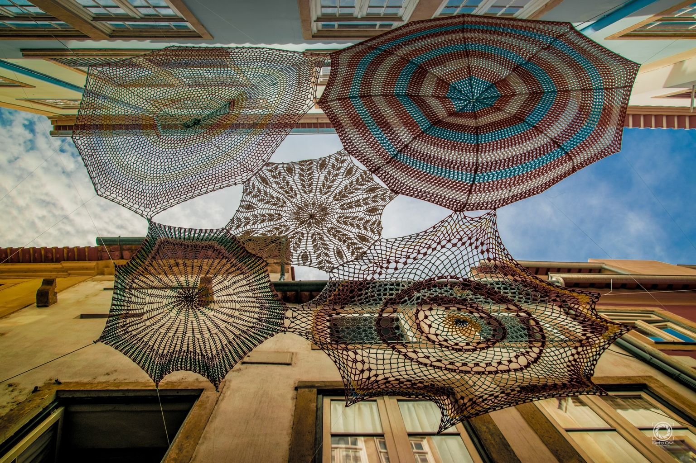
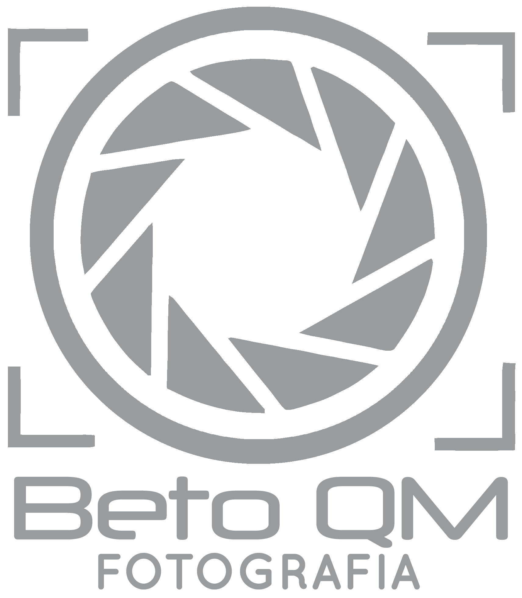

Saltar para o conteúdo principal
Técnicas de Fotografia & Vídeo
Introdução à Multimédia
A-
A+
Contraste
Início
Planos
Ângulos
Regra dos Terços
Movimentos
Galeria
"A fotografia é um poema ao olhar,
é o eternizar de um momento, esculpido com raios de luz."
Galeria
Exemplos fotográficos para analisar composição, luz e enquadramento.







×
